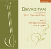

Compositions of
Sri H. Yoganarasimham - Gita Kusumanjali
-
bhaja rē mānasa (svarajati) | Sanskrit
Notation-Kannada & Devanagari | Notation-English | Meaning | -
sundara dēva (tānavarṇa) | Telugu
Notation-Kannada & Devanagari | Notation-English | CD1 -
vanamālini (tānavarṇa) | Telugu
Notation-Kannada & Devanagari | Notation-English | -
kamalā (tānavarṇa) | Sanskrit
Notation-Kannada & Devanagari | Notation-English | Meaning | CD2 -
pāmarāham (tānavarṇa) | Sanskrit
Notation-Kannada & Devanagari | Notation-English | Meaning | -
maguva (tānavarṇa) | Telugu
Notation-Kannada & Devanagari | Notation-English | -
ēkadantamupāsmahē (kṛti) | Sanskrit
Notation-Kannada & Devanagari | Notation-English | Meaning | CD1 -
maracitivō (kṛti) | Telugu
Notation-Kannada & Devanagari | Notation-English | -
śāntirupāsyatām (kṛti) | Sanskrit
Notation-Kannada & Devanagari | Notation-English | Meaning | CD2 -
moreyiṭṭarēnu (kṛti)
rāga : rēvati | tāḷa : ḳhaṇḍa chāpu | Kannada
Notation-Kannada & Devanagari | Notation-English | CD1 -
kō vā rāgō (kṛti)
rāga : valaji | tāḷa : miśra jhampe | Sanskrit
Notation-Kannada & Devanagari | Notation-English | Meaning | CD1 -
nādavarasuśōbhitam (kṛti)
rāga : nādavarāngiṇi | tāḷa : khaṇḍa tripuṭa | Sanskrit
Notation-Kannada & Devanagari | Notation-English | Meaning | CD1 -
sujanacaritam (kṛti)
rāga : mukhāri | tāḷa : ādi | Sanskrit
Notation-Kannada & Devanagari | Notation-English | Meaning | CD1 -
ninu miñcina (kṛti)
rāga : kōlāhala | tāḷa : miśra chāpu | Telugu
Notation-Kannada & Devanagari | Notation-English | CD2 -
prasannakamalēśam (kṛti)
rāga : śaṅkarābharaṇa | tāḷa : caturasra rūpaka | Sanskrit
Notation-Kannada & Devanagari | Notation-English | Meaning | -
nijada nija (kṛti)
rāga : bhānudhanyāsi | tāḷa : khaṇḍa chāpu | Kannada
Notation-Kannada & Devanagari | Notation-English | Meaning | -
candraśēkharabhārati (kṛti)
rāga : kāmavardhani | tāḷa : ādi | Sanskrit
Notation-Kannada & Devanagari | Notation-English | Meaning | CD1 -
sadā sāraṅganayanē (kṛti)
rāga : rañjani | tāḷa : ādi | Sanskrit
Notation-Kannada & Devanagari | Notation-English | Meaning | CD2 -
kāpāḍade (kṛti)
rāga : gaganamōhini | tāḷa : ādi | Kannada
Notation-Kannada & Devanagari | Notation-English | CD1 -
nādabrahmapurē (kṛti)
rāga : praṇavākāri | tāḷa : khaṇḍatripuṭa | Sanskrit
Notation-Kannada & Devanagari | Notation-English | Meaning | -
saphalam jīvitam (kṛti)
rāga : kuntalakusumāvaḷi | tāḷa : ādi | Sanskrit
Notation-Kannada & Devanagari | Notation-English | Meaning | CD2 -
rājabhōga (kṛti)
rāga : gaurimanōhari | tāḷa : ādi | Kannada
Notation-Kannada & Devanagari | Notation-English | -
hēmātīra (kṛti)
rāga : kāmbhōji | tāḷa : khaṇḍatripuṭa | Sanskrit
Notation-Kannada & Devanagari | Notation-English | Meaning | CD2 -
koḷalelli (rāgamālikegaḷu)
rāga : rāgamālike | tāḷa : ādi | Kannada
Notation-Kannada & Devanagari | Notation-English | -
ōṅkārapañjaraśukīm (rāgamālikegaḷu)
rāga : rāgamālike | tāḷa : ādi | Sanskrit
Notation-Kannada & Devanagari | Notation-English -
tōm tana dira na (tillāna)
rāga : ābhōgi | tāḷa : khaṇḍatripuṭa
Notation-Kannada & Devanagari | Notation-English | CD1 -
tana nā diri diri dīm (tillāna)
rāga : nāṭakurañji | tāḷa : ādi
Notation-Kannada & Devanagari | Notation-English | -
dhīm tadare dani (tillāna)
rāga : śahana | tāḷa : ādi
Notation-Kannada & Devanagari | Notation-English | -
tām nādiri dānī (tillāna)
rāga : kalyāṇi | tāḷa : ādi
Notation-Kannada & Devanagari | Notation-English | CD2 -
tarana nādiri diri (tillāna)
rāga : sunādavinōdini | tāḷa : ādi (tryasra naḍe)
Notation-Kannada & Devanagari | Notation-English | -
śṛṅgāraśēkhara (pada)
rāga : nīlāmbari | tāḷa : caturasra ēka | Telugu
Notation-Kannada & Devanagari | Notation-English | -
manavini vinumā (jāvaḷi)
rāga : valaji | tāḷa : caturasra rūpaka | Telugu
Notation-Kannada & Devanagari | Notation-English | -
pañcāṅga nōḍi bandirā (jāvaḷi)
rāga : ḳamās | tāḷa : caturasra rūpaka | Kannada
Notation-Kannada & Devanagari | Notation-English | -
jaya jaya bhārata (rāshṭradvajavandana gītam)
rāgamālike | tāḷa : ēkatāḷa | Kannada
Notation-Kannada & Devanagari | Notation-English | CD2 -
namō arbhakēbhyaha (arbhakagītam)
rāgamālike | tāḷa : caturasra ēkatāḷa | Sanskrit
Notation-Kannada & Devanagari | Notation-English | -
narasimhāya (divyanāma)
rāga : madhyamāvati | tāḷa : ādi | Sanskrit
Notation-Kannada & Devanagari | Notation-English | CD2

A set of two compact discs, sung by
Smt. Neeraja Achuta Rao (Daughter of Sri H. Yoganarasimham)
Dr. M. A. Jyothi (Grand Daughter of Sri H. Yoganarasimham)
Audio CDs are available at all leading music stores in Bangalore. You may also write to devagitam@gmail.com to purchase them.